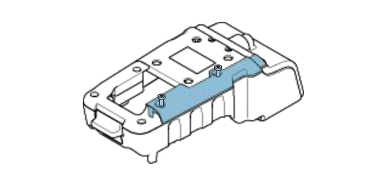
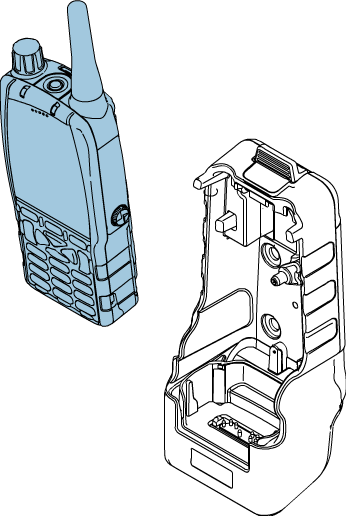

Animation examples
Below are an assorted selection of pieces of animation work that showcase a versatility
in my abilities.
Cubing animation
This animation explains how cubing (an algorithm which determines how products can fit into containers) works.
Software used
Adobe Animate
Adobe Illustrator
Communication hardware examples
These animations are created as examples of how Adobe Animate can be used to improve user guides. The original Creo drawings weren't available, so the images are taken from a user guide PDF, taken into Illustrator and then imported into Animate.
Software used
Adobe Acrobat
Adobe Animate
Adobe Illustrator

